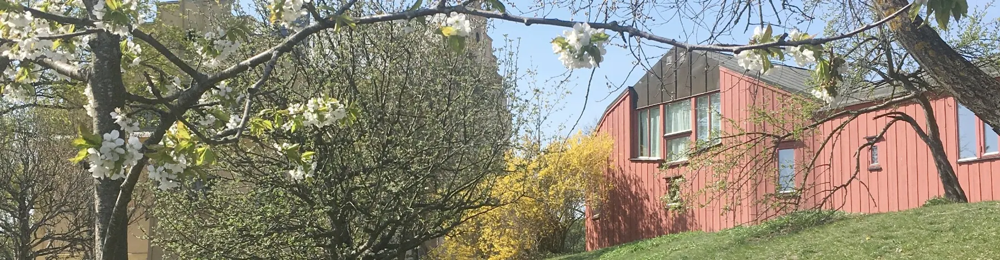
Om skolan
Rudolf Steinerskolan är sedan 1975 en kulturbärande skola mitt i samhället. Här ges grundskoleutbildning för skolans första tio år, förskoleklass upp till årskurs 9. Vår strävan är att eleverna ska ha samma lärare under de första sex skolåren, för att sedan successivt övergå till ämneslärare under årskurs 7, 8 och 9. Relationen mellan föräldrar, lärare och elever är nära och gemytlig.
Vår undervisning bedrivs med väl genomtänkt pedagogik och erbjuder en bred sammanhållen studiegång där naturvetenskap, humaniora, musik, konst och hantverk bildar en enhet.
Skolan ligger i en lugn oas omfamnad av en blomstrande trädgård med gångavstånd till Norrköpings stadskärna. Här finns förskoleklass, grundskola och fritidshem.
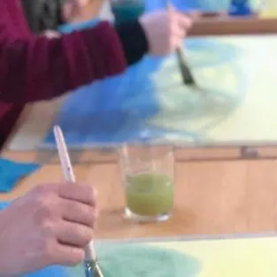
Årskurs F-9
Hos oss undervisar vi enligt waldorfpedagogik. Genom kreativa lärprocesser väcks elevernas nyfikenhet, engagemang och förundran inför vår omvärld.
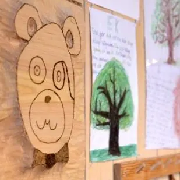
Elevhälsa
Vår elevhälsa består av skolsköterska, kurator, specialpedagog, skolläkare och skolpsykolog. I skolans elevhälsoteam ingår även skolans studie- och yrkesvägledare. Elevhälsoteamet samverkar med elever, klasser och lärare. Vi arbetar aktivt för att främja trygghet och följer de nationella riktlinjerna kring agerande och förebyggande arbete.
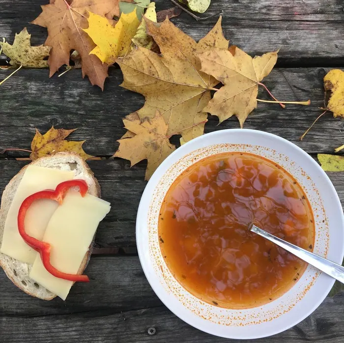
Skollunch
Vid varje skollunch får eleverna omsorgsfull, vällagad mat som till största del är vegetarisk. Maten lagas av Skolfood.
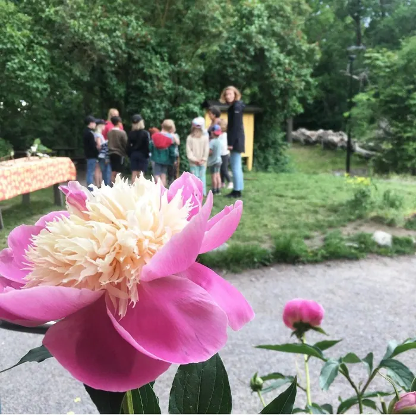
Fritidshemmet
På fritidshemmet Vildapeln strävar vi efter att skapa en miljö där alla elever ska känna trygghet och frihet. Eleverna ska ges möjlighet att insupa nya kunskaper och utveckla sina intressen, men de ska också ges möjlighet till utandning och återhämtning.
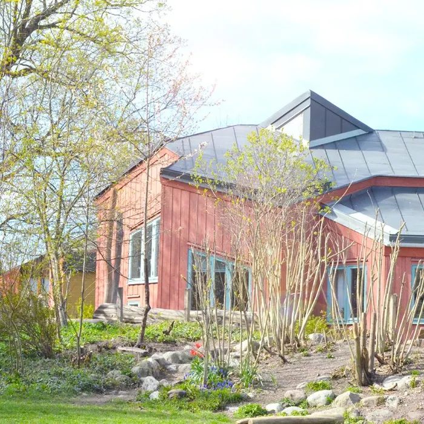
Förskolorna Äppelblomman & Vildrosen
Intill skolan ligger Norrköpings Waldorfförskolor. Här får barn vara barn i en ombonad och varm miljö, omgivet av en en lekfull och blomstrande trädgård. Med hjälp av enkla lektillbehör av naturmaterial utmanas barnens kreativitet att skapa sin egen lek och dess innehåll. Förskolorna drivs av egen huvudman, Stiftelsen Äppelblomman.
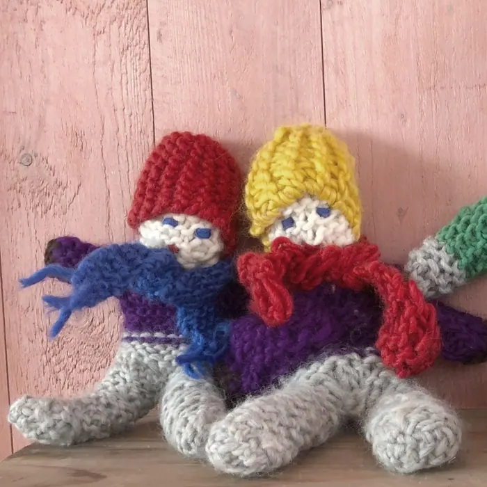
Skolans medarbetare
På Rudolf Steinerskolan arbetar klasslärare och ämneslärare, stödresurser, rektorer, kuratorer, skolsköterska med flera. Har hittar du mer information om skolans medarbetare.
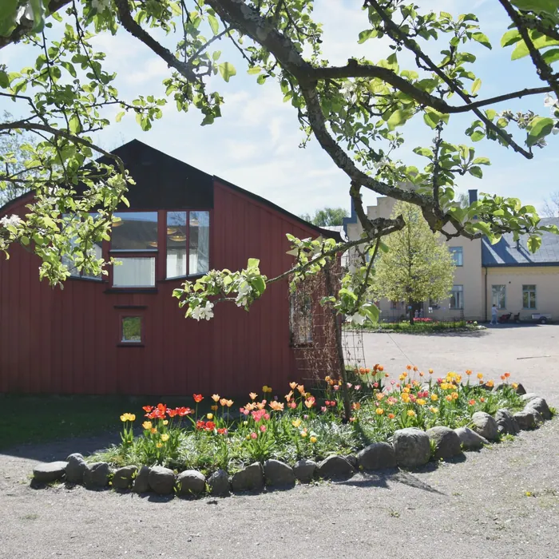
Trädgård & utemiljö
Skolgården är en gömd oas mitt på Ståthöga, vackert blomstrande om våren och med dignande äppelträd under hösten. Här finns såväl stora och öppna gräsytor, som hemliga små skogsdungar; anlagda trädgårdar liksom vildvuxna ängar. Här finns också en nybyggd vattentrappa, klätterställning, gungor och utegym. Läs mer om skolans byggnadsstiftelse på deras hemsida.
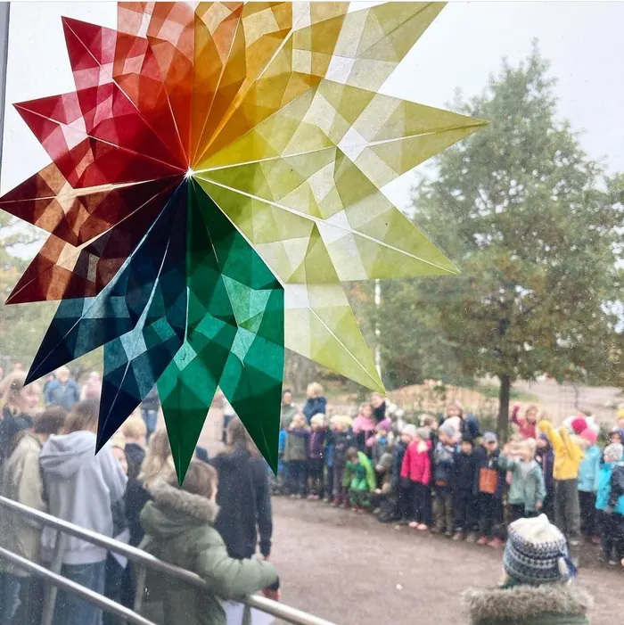
Att vara waldorfförälder
Att vara waldorfförälder innebär en möjlighet till delaktighet och engagemang i skolan. Alla föräldrar till barn på Rudolf Steinerskolan, Äppelblomman och Ståthögaskolan är del av Föräldraföreningen, vars uppgift är att bidra till att skapa en god och trivsam miljö på skolan.
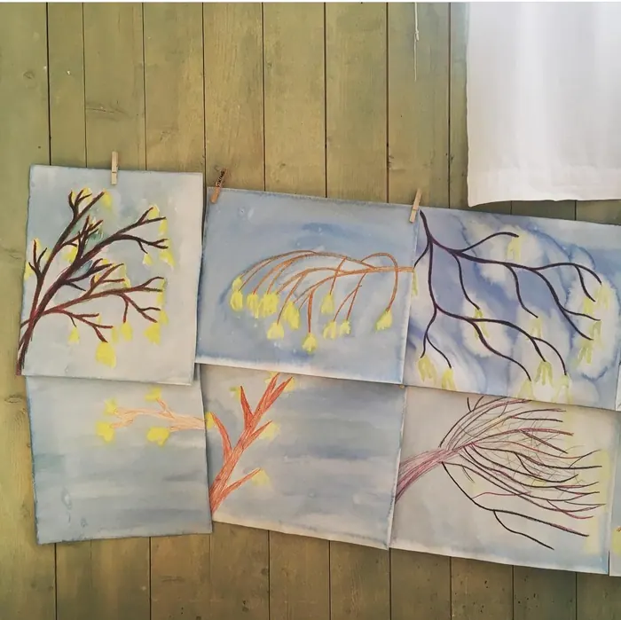
Organisationen
Vi är en fristående, icke utdelande skola. Skolans huvudman är skolans styrelse som består av bland annat föräldrar. Läs mer om skolans styrelse här.
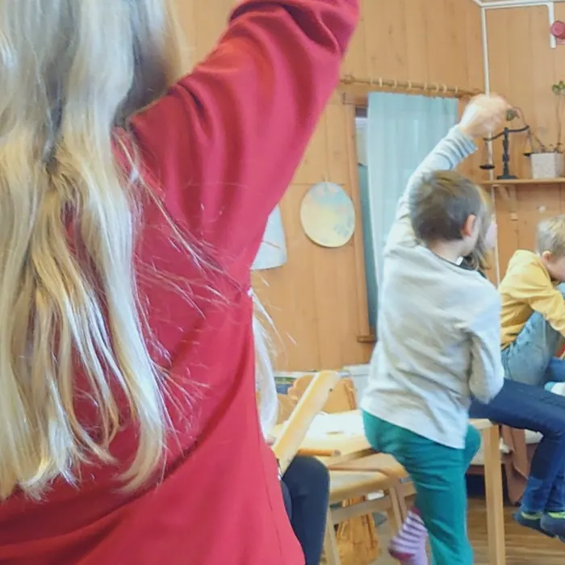
Elevinflytande
Elevinflytande är viktigt för oss på Rudolf Steinerskolan. Verksamheten är till för våra elever, och därför är det viktigt att lyssna in deras tankar och åsikter i frågor som rör dem. När elever får vara med och tycka till på sin egen skola är det lättare att bli engagerad och känna en vilja att lära.
Slöjden handlar om att utveckla självkänsla, frihet och autonomi – möjlighet att klara sig själv, och i en gemenskap vilja att kunna hjälpa andra.

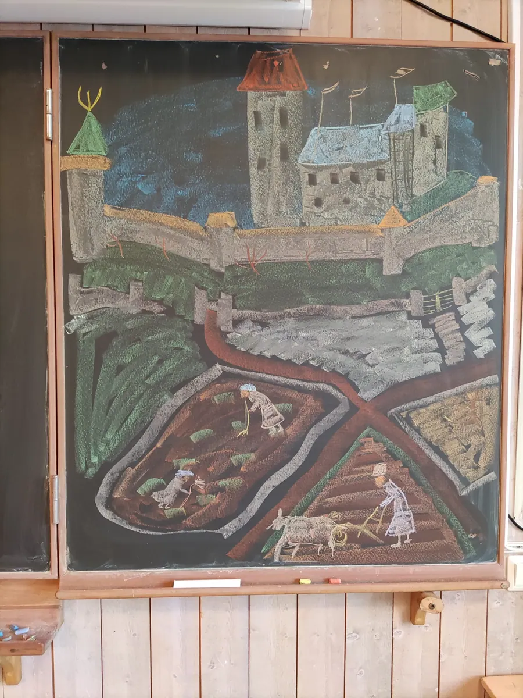

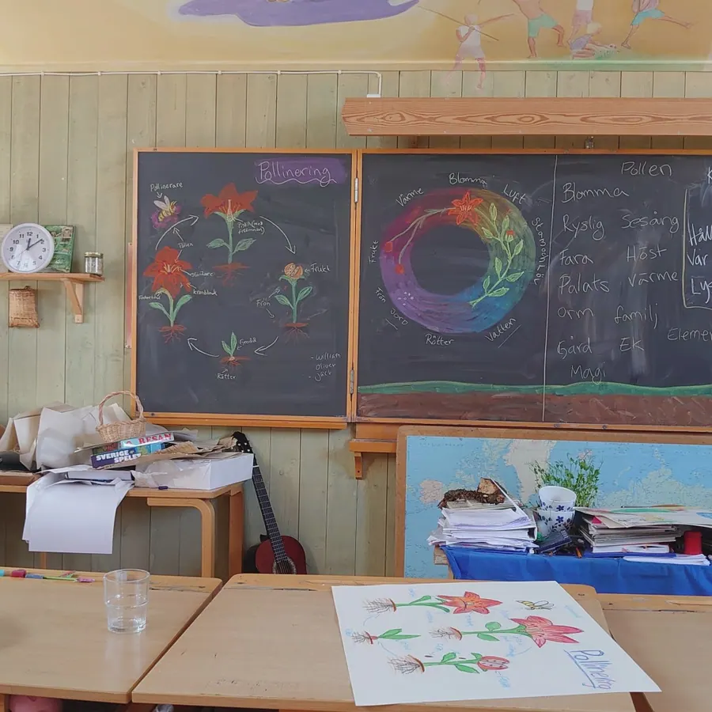
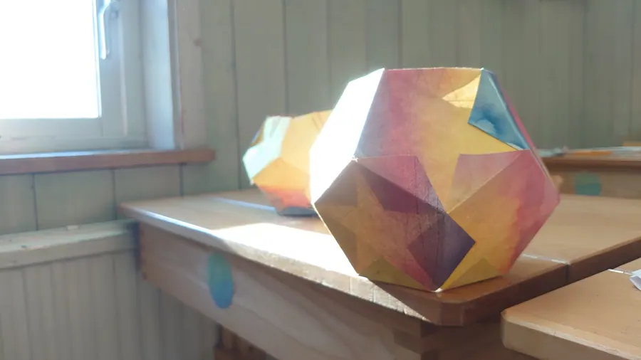
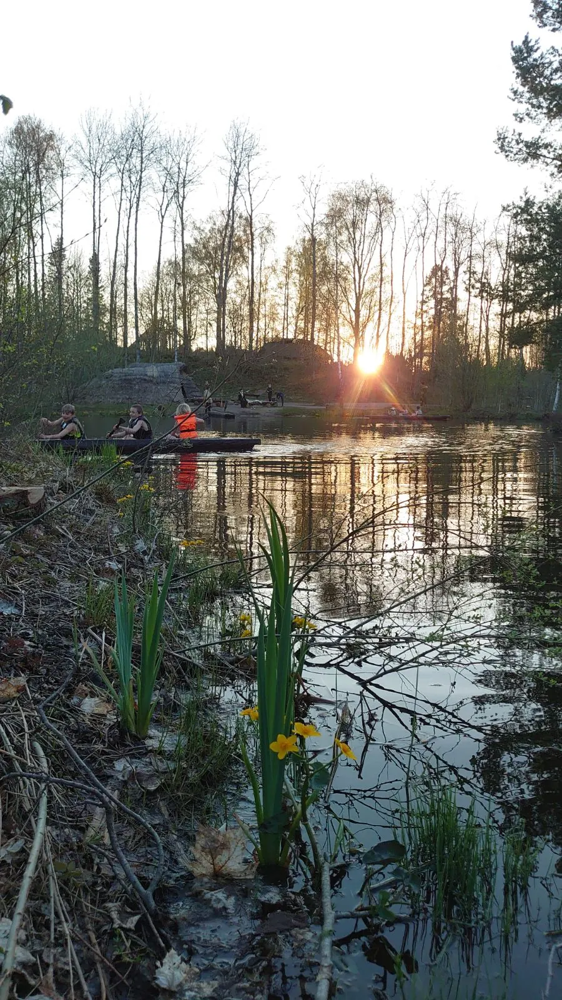
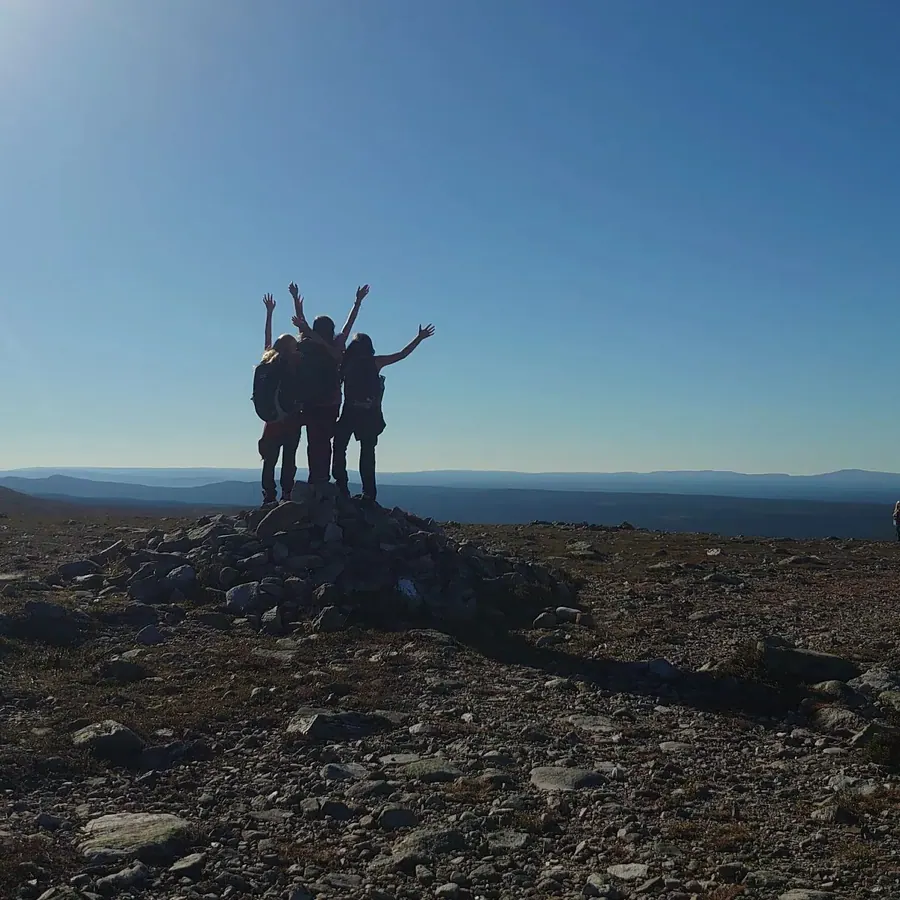
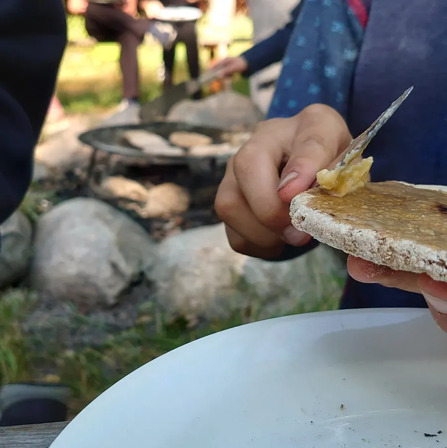